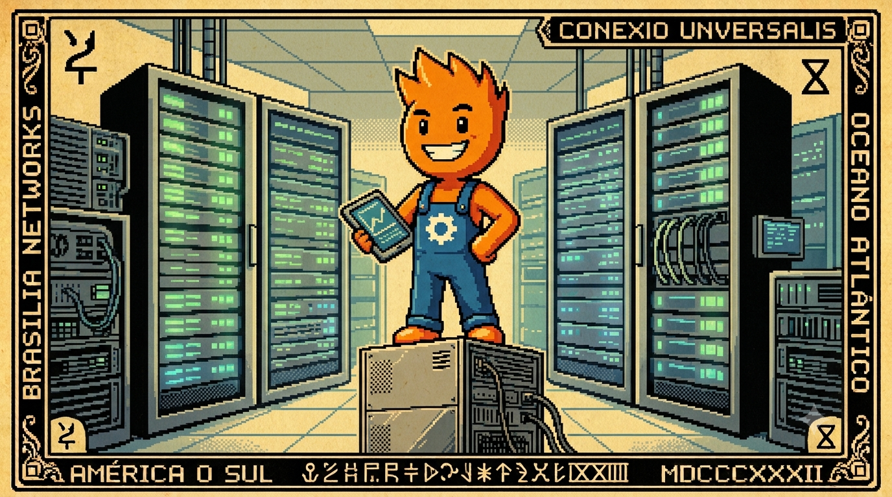

Canto VII: O Templo da Nuvem Central
Na nuvem do Templo Central, o tráfego é de assustar,
São três mil e duzentos caixas querendo sincronizar.
Se a gente trancar a porta pra processar tudo na hora,
O servidor entra em pane e o sistema chora e chora.
Mas com o 'HTTP 202' respondemos na velocidade da luz,
E a fila de processamento em segundo plano se produz!

O que é o Templo da Nuvem Central?
Chamamos de Templo da Nuvem Central o dogma de arquitetura corporativa que dita que toda e qualquer inteligência, processamento e gravação de dados de um negócio distribuído deve residir e ser processada síncronamente em uma estrutura de nuvem remota central. Sob essa visão míope, o caixa do balcão de vendas vira apenas um terminal burro de exibição dependente do servidor remoto, transformando qualquer oscilação de link ou downtime da AWS em um ritual de faturamento paralisado e filas de clientes furiosos.
O Pesadelo da Sincronização Síncrona na Nuvem
Quando uma rede com 3.200 lojas físicas decide sincronizar suas transações do dia ou enviar cupons de venda em horários de pico (como na Black Friday ou véspera de Natal), o volume de requisições concorrentes na API do servidor central explode. Se a retaguarda tentar executar toda a lógica de negócio (deduzir estoque centralizado, gerar relatórios de faturamento, integrar com o financeiro e disparar webhooks de fidelidade) durante a própria requisição de rede do caixa, o banco de dados central (MySQL/PostgreSQL) esgotará seu pool de conexões em poucos minutos.
O resultado é um travamento geral: caixas recebem timeouts sucessivos, a CPU do servidor da nuvem bate 100% e toda a cadeia de lojas para de operar.
Comparativo: Ingestão Bloqueante vs. Ingestão Reativa
Veja a diferença de arquitetura e capacidade de processamento na nuvem central para receber transações distribuídas das lojas:
Arquitetura de Ingestão Desacoplada
Enquanto as threads virtuais (Canto V) e o padrão Outbox (Canto VI) protegem a resiliência física da loja, na nuvem central precisamos de uma ingestão desacoplada que capture os lotes rapidamente e libere a rede do caixa sem causar esperas:
A Solução: Recebimento Reativo e HTTP 202 (Accepted)
O CaraCore Hub adota a filosofia do desacoplamento total. O endpoint receptor na nuvem é implementado com Spring WebFlux (programação reativa não-bloqueante) e executa apenas três etapas rápidas:
- Valida a segurança e a assinatura criptográfica do token do caixa.
- Grava o JSON bruto recebido em uma tabela rápida de auditoria (*Ingestion Table*) usando escrita direta indexada.
- Responde imediatamente ao caixa o status HTTP 202 Accepted (Requisição Aceita).
Essa transação de rede inteira consome menos de 50 milissegundos. O caixa recebe o sinal de sucesso, sabe que o Hub garantiu o recebimento da venda e limpa sua fila local.
Nota de Design (Complexidade Reativa vs. Loom): Embora o Spring WebFlux garanta alta escala de concorrência com poucas threads de sistema, a programação reativa aumenta a complexidade do código, dificulta a depuração e obscurece stack traces. Sob o **Java 25**, usar o **Spring MVC clássico configurado com Threads Virtuais (Loom)** se consolidou como uma alternativa viável, fornecendo nível de escala reativa equivalente para a recepção HTTP usando o paradigma de programação síncrona/bloqueante tradicional muito mais legível.
Na retaguarda, um pool de threads assíncronas do Spring na Nuvem consome os JSONs da *Ingestion Table* de forma cadenciada, atualizando o banco central sem expor a API de recepção à sobrecarga das operações de negócio complexas.
⚖️ O Veredito da Bancada (Técnico vs. Negócios)
💻 Para Técnicos (A Baseline)
Utilize `@ResponseStatus(HttpStatus.ACCEPTED)` no controller reativo (ou Spring MVC + Loom). Se usar JPA/JDBC reativo híbrido, a gravação na Ingestion Table deve ser delegada ao `Schedulers.boundedElastic()` para evitar o congelamento do loop de eventos do Netty. O processamento lógico final é orquestrado por um worker assíncrono `@Scheduled` gradual.
👔 Para Negócios (O Retorno)
Economia maciça na nuvem: o servidor central não cai e não precisa de dezenas de servidores caros para lidar com pico de acessos. As informações financeiras consolidam na matriz de forma gradual e segura, sem atrapalhar o faturamento das lojas.
Conclusão da Retaguarda Central
A nuvem central deve atuar como um consolidador analítico de dados assíncrono, nunca como um validador de rede de execução síncrona vital para as vendas locais. Isolar o canal de entrada usando programação reativa e retornos imediatos HTTP 202 é o segredo para garantir que o Hub da retaguarda escale de forma limpa e econômica.
Com a persistência local (SQLite), a interface de tela (HTMX), a concorrência serial (Loom), o envio assíncrono (Outbox) e a recepção reativa (WebFlux) concluídos, a etapa final para domar a complexidade operacional de 3.200 lojas é a telemetria distribuída. No próximo canto, exploraremos como monitoramos a saúde operacional de todos esses nós usando Spring Boot Actuator, Prometheus e Grafana.
Hashtags
Contato
- E-mail: suporte@caracore.com.br
- Site: www.caracore.com.br
- LinkedIn: Cara Core Informática
Conheça a ingestão assíncrona de alto desempenho da Cara Core e garanta estabilidade na matriz.
Otimizar Minha Nuvem